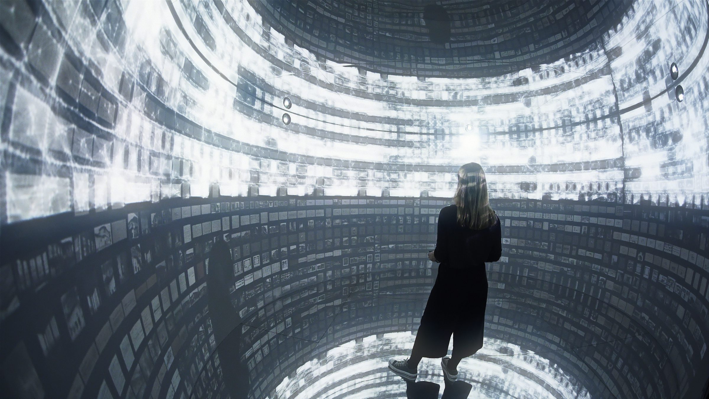
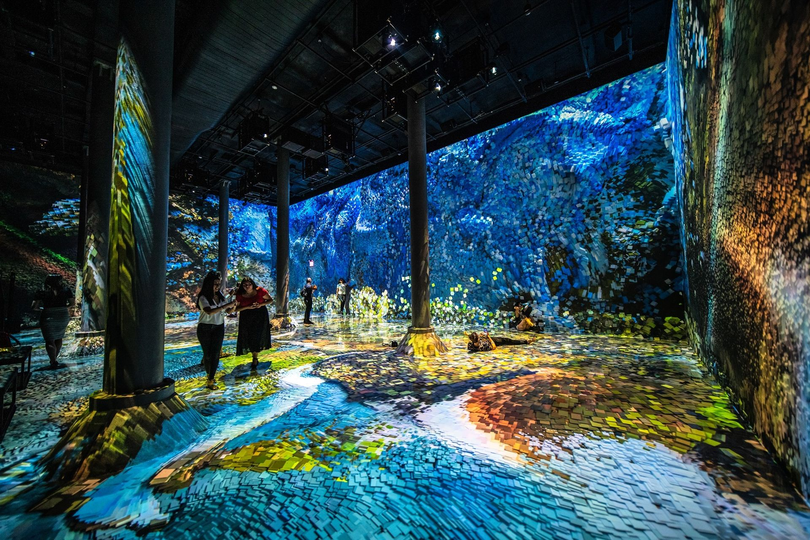
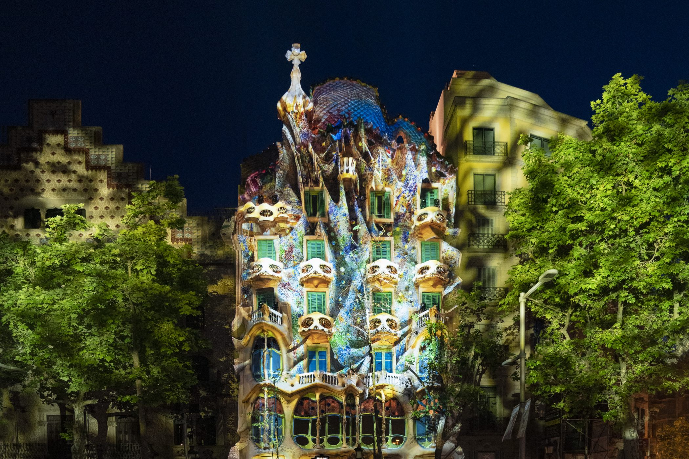
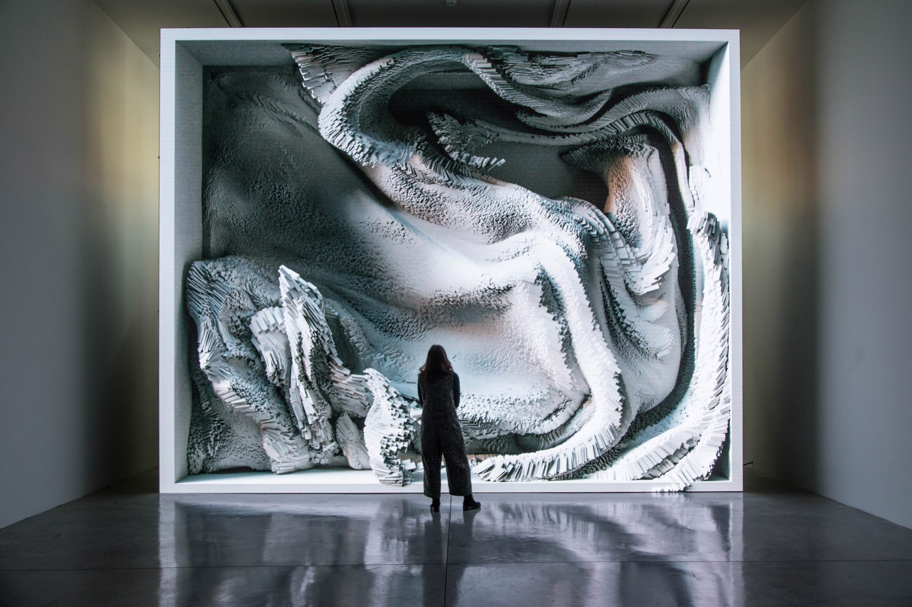

Archives Dreams
3 Février 2017
Avec les vastes collections de SALT Research, Refik Anadol met en œuvre un algorithme d’apprentissage automatique sophistiqué capable d’analyser et de trier les connexions entre plus d’un million de documents. Cet outil puissant permet non seulement de traiter les informations à une vitesse impressionnante, mais aussi de soutenir l’artiste dans l’exploration de nouvelles dimensions créatives. En transformant ces données en une œuvre immersive, l’artiste dévoile des interactions multidimensionnelles fascinantes qui transcendent les frontières traditionnelles de l’archive. Présentée dans le cadre de "The Uses of Art: Final Exhibition", cette installation révolutionnaire redéfinit la manière dont nous percevons le rôle de l’archive en mêlant passé et présent dans un espace artistique unique. L’intervention de Refik Anadol métamorphose la galerie SALT Galata en un environnement global, où l’histoire dialogue avec le contemporain, invitant le spectateur à repenser les notions d’immuabilité et de pérennité associées aux archives traditionnelles.
Machine Hallucinations
5 septembre au 5 février 2020
Cette œuvre, conçue pour la galerie König, est un écran monumental, affichant une sculpture de données créée à l’aide de pigments dynamiques dont l'inspiration première vient de l'esthétisme de la nature. Il a pu otbenir ces résultas grâce à des informations générés par des algorithmes qu'il a programmé à l'aide de son équipe. Refik Anadol transforme les données obtenues en formes visuelles fluides et évolutives, ces animations offrent une expérience immersition totale où technologie et nature se rencontrent. Grâce à cette approche novatrice, il devient le premier artiste à présenter une œuvre d’art numérique en NFT entièrement immersive dans cette galerie. En intégrant les objets de collection cryptographiques à son travail, il redéfinit la création artistique et invite le public à repenser les interactions entre art, technologie et perception.
REFIK ANADOL
Refik Anadol est un artiste, designer et chercheur d'origine turco-américaine, son implication dans le monde de l'art s'associe
également à celui de la science et de la technologie.
Né en 1985 à Istanbul et actuellement basé à Los Angeles, il devient une figure emblématique du data art,
explorant les possibilités infinies offertes par l'intelligence artificielle et les techniques de visualisation avancées.
Son approche artistique se concentre dans l'usage des technologies de pointe, qu'il utilise pour transformer des concepts abstraits en expériences visuelles captivantes et immersives.
Intégrant des algorithmes d'apprentissage automatique et des flux de données en temps réel, tels que les capteurs dans l'espace ou les archives historiques,
Refik Anadol crée des œuvres d'art génératif qui évoluent continuellement, reflétant la dynamique d'un monde en perpétuelle transformation.
Son travail ne s'arrête pas qu'à des interprétations esthétiques des données,
il s'interroge également sur la relation entre les humains et les machines dans un vaste espace.
Il se demande si les algorithmes peuvent être employés pour réinventer l'espace,
employant un climat physique et numérique dans des installations où le spectateur devient un participant actif.
À travers ses projets, il dépasse les limites de l'art numérique traditionnel en fusionnant des éléments tels que les données sur le climat,
les mouvements sociaux ou les ouvrages culturelles pour produire des œuvres qui résonnent à la fois sur les plans intellectuel et émotionnel.
Ses installations, souvent monumentales, transforment les espaces urbains, les galeries et les musées en environnements immersifs où l'histoire,
la science et l'innovation technologique convergent. En posant un regard visionnaire sur l'avenir de l'art et de la technologie,
Refik Anadol continue de repousser les frontières du possible, inspirant un dialogue global sur la créativité et l'impact de l'IA dans notre société.
refikanadol.com
Living Architecture: Casa Batlló
10 mai 2022
Inspirée par le célèbre bâtiment d’Antoni Gaudí, situé à Barcelone, en Espagne, cette œuvre marque une étape importante dans la carrière de Refik Anadol. Il s'agit de sa première création vendue aux enchères par Christie’s, un exploit qui témoigne de son influence croissante dans le monde de l’art contemporain. L’œuvre a été dévoilée de manière spectaculaire sur un écran géant multimédia à Rockefeller Plaza, au cœur de New York, attirant l’attention d’un public international. Ce moment a été amplifié par une performance simultanée de mapping vidéo en direct, projetée sur la façade emblématique de la Casa Batlló, transformant le bâtiment en une toile vivante et interactive. Unique en son genre, cette œuvre était le seul NFT présenté lors de cette vente aux enchères, où elle a établi des records historiques. Elle symbolise non seulement l’innovation technique, mais aussi une reconnaissance significative pour la prochaine génération d’artistes explorant les frontières entre art numérique, architecture et immersion technologique.
Melting Memories
7 février au 17 mars 2018
La galerie Pilevneli a présenté un projet d'Anadol, explorant de manière approfondie la matérialité de la mémoire humaine et collective. Cette œuvre immersive offre une perspective novatrice sur l’intersection des nouvelles technologies et de l’art contemporain, mettant en lumière comment des concepts abstraits comme la mémoire peuvent être traduits en expériences visuelles spectaculaires. Grâce à un processus de récupération et de transformation de données, l’artiste crée une représentation dynamique et envoûtante de la mémoire. Ces données, collectées et manipulées à l’aide d’algorithmes d’intelligence artificielle, sont projetées sur des écrans gigantesques, créant un environnement où chaque détail est conçu pour immerger le spectateur dans une expérience sensorielle unique. Ce projet transcende les frontières traditionnelles de l’art, remettant en question les limites entre l’archive, la technologie et l’expérience émotionnelle, tout en offrant une réflexion profonde sur notre rapport à la mémoire et à son évolution dans un monde de plus en plus digitalisé.